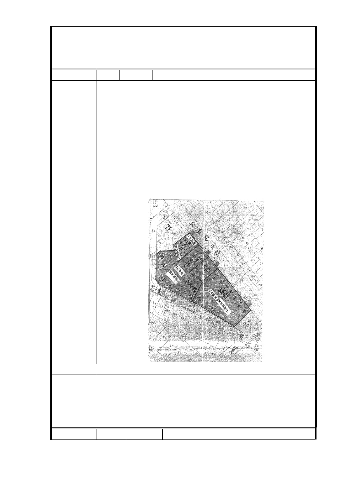

一、R04 站南側捷二用地，維持公展範圍（基地面積 3,328
委員會決議
㎡），並辦理土地開發。
二、同「市府回應意見」。
編 號 17-1 陳情人 賴永章（R04 捷二）
1.根據 103 年 1 月 11 日捷運信義線 R04 站南區土地整合開發
說明會，若 C 區住戶同意的話，建議 A＋C 區做捷運出口站
體及通風井。
2.既然信義線 R04 站，北區在信義路六段 33 號前後兩戶做出
口，其餘住戶不參加聯開（因為土地產權問題），為何南區
要開發 B 區塊當站體？可否徵詢信義路六段 60 號至 70 號
地主的意見，因為還是有很多住戶不想參加聯開。
3.假設 B 區塊住戶不同意參加聯開，而第一點意見也不可
行，可否在松友公司設出口即可？（如板南線府中站 3 號
出口，即設在府中路與東門街的小公園。新生站 2 號出口，
即設在忠孝東路與新生南路的小公園）。
陳情理由
建議辦法
市府回應
意見
同編號 2、9-1 研析意見。
一、R04 站南側捷二用地，維持公展範圍（基地面積 3,328
委員會決議
㎡），並辦理土地開發。
二、同「市府回應意見」。
編 號 17-2 陳情人 賴永章（R04 捷二）
- 67 -